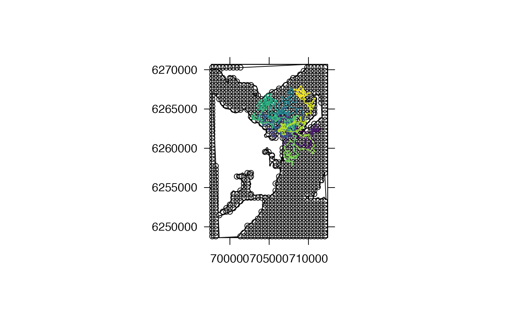
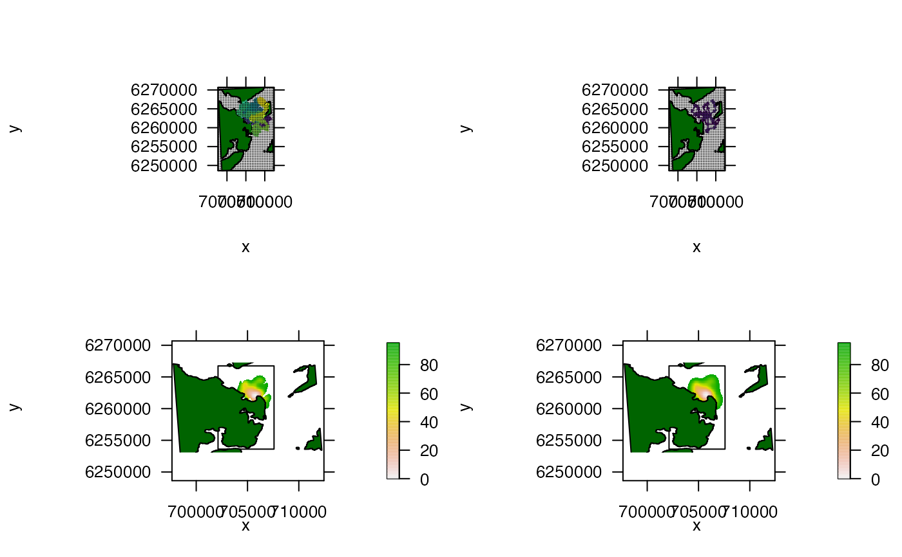

Evaluate movement path estimates using kernel utilisation distributions
Source:R/evals.R
eval_by_kud.RdThis function provides a qualitative evaluation of a movement-path estimation procedure when the true movement path is known by graphically comparing the two paths and the resultant patterns of space use that emerge from these using kernel utilisation distributions. To implement the function, the simulated and estimated paths need to be provided as SpatialPointsDataFrames. For each path, the function estimates the resultant home range under a kernel utilisation distribution model and then produces up to four plots that show the two paths and the two estimated home ranges. When the estimation procedure performs well, the patterns of space use inferred from the simulated and estimated paths should be similar. In contrast, differences between these patterns can help to reveal the circumstances under which the movement-path estimation procedure performs less well.
eval_by_kud( path_sim, path_est, estimate_ud = adehabitatHR::kernelUD, grid, h = "href", hlim = c(0.1, 1.5), kern = c("bivnorm", "epa"), extent = 1, boundary = NULL, process = NULL, plot = 1:4L, array, add_receivers = list(), add_land = NULL, add_sea = NULL, add_path_sim = list(col = viridis::viridis(nrow(path_sim)), length = 0.02), add_path_est = add_path_sim, add_vol_sim = list(), add_vol_est = list(), one_page = TRUE, verbose = TRUE, ... )
Arguments
| path_sim, path_est |
|
|---|---|
| estimate_ud | A function (either |
| grid, h, hlim, kern, extent, boundary | Arguments passed to |
| process | (optional) A function, applied to a |
| plot | An integer vector ( |
| array | A named list that defines the properties of an array (e.g., the `array' element of |
| add_land, add_sea, add_receivers, add_path_sim, add_path_est, add_vol_sim, add_vol_est | (optional) Named lists of arguments that customise the appearance of the land and sea, receivers, the simulated and estimated paths and the kernel volumes for the simulated and estimated paths respectively. An empty list ( |
| one_page | A logical variable that defines whether or not to produce all plots on a single page. |
| verbose | A logical variable that defines whether or not to print messages to the console to relay function progress. |
| ... | Additional arguments, passed to |
Value
The function returns up to four plots that provide a qualitative evaluation of an estimation procedure that infers patterns of space use from observations.
Details
This function can be combined with sim_array, sim_path_* functions, sim_detections and space use algorithms (e.g., coa) to evaluate the relative performance of different approaches for the inference of patterns of space use under different array designs, movement models and/or detection models.
Author
Edward Lavender
Examples
#### Steps # We need to simulate an array, a movement path through this arra # ... and detections arising at receivers given this path. Then, we need to # ... implement a space use algorithm (e.g., coa()) to estimate the movement # ... 'path' from the observed data (detections). With the simulated and # ... estimated movement path, we can then compare how well the estimated # ... path recovers the 'true' pattern of space use by passing these # ... paths to the eval_by_kud() function. #### Step (1) Simulate an array in an area # We will pack the area with receivers to generate lots of detections array_ls <- sim_array(boundaries = raster::extent(dat_coast), coastline = dat_coast, n_receivers = 1000, arrangement = "regular", seed = 1)#> flapper::sim_array() called (@ 2021-12-02 11:52:54)... #> ... Defining area... #> ... Incorporating coastline... #> ... Incorporating receivers... #> ... ... Simulating receivers...#> Warning: CRS object has comment, which is lost in output#> ... Plotting array...#>#> ... Defining outputs... #> ... flapper::sim_array() call completed (@ 2021-12-02 11:52:54) after ~0 minutes.raster::lines(dat_coast)array <- array_ls$array #### Step (2) Simulate a movement path in this area n <- 500 path_ls <- sim_path_sa(n = n, sim_step = function(...) stats::rgamma(1, shape = 25, scale = 25), area = array$sea, seed = 1, plot = FALSE )#> flapper::sim_path_sa() called (@ 2021-12-02 11:52:54)... #> ... Setting up simulation... #> ... Simulating movement path... #> | | | 0%#> Warning: CRS object has comment, which is lost in output#> | | | 1% | |= | 1% | |= | 2% | |== | 2% | |== | 3% | |=== | 4% | |=== | 5% | |==== | 5% | |==== | 6% | |===== | 7% | |===== | 8% | |====== | 8% | |====== | 9% | |======= | 9% | |======= | 10% | |======= | 11% | |======== | 11% | |======== | 12% | |========= | 12% | |========= | 13% | |========== | 14% | |========== | 15% | |=========== | 15% | |=========== | 16% | |============ | 17% | |============ | 18% | |============= | 18% | |============= | 19% | |============== | 19% | |============== | 20% | |============== | 21% | |=============== | 21% | |=============== | 22% | |================ | 22% | |================ | 23% | |================= | 24% | |================= | 25% | |================== | 25% | |================== | 26% | |=================== | 27% | |=================== | 28% | |==================== | 28% | |==================== | 29% | |===================== | 29% | |===================== | 30% | |===================== | 31% | |====================== | 31% | |====================== | 32% | |======================= | 32% | |======================= | 33% | |======================== | 34% | |======================== | 35% | |========================= | 35% | |========================= | 36% | |========================== | 37% | |========================== | 38% | |=========================== | 38% | |=========================== | 39% | |============================ | 39% | |============================ | 40% | |============================ | 41% | |============================= | 41% | |============================= | 42% | |============================== | 42% | |============================== | 43% | |=============================== | 44% | |=============================== | 45% | |================================ | 45% | |================================ | 46% | |================================= | 47% | |================================= | 48% | |================================== | 48% | |================================== | 49% | |=================================== | 49% | |=================================== | 50% | |=================================== | 51% | |==================================== | 51% | |==================================== | 52% | |===================================== | 52% | |===================================== | 53% | |====================================== | 54% | |====================================== | 55% | |======================================= | 55% | |======================================= | 56% | |======================================== | 57% | |======================================== | 58% | |========================================= | 58% | |========================================= | 59% | |========================================== | 59% | |========================================== | 60% | |========================================== | 61% | |=========================================== | 61% | |=========================================== | 62% | |============================================ | 62% | |============================================ | 63% | |============================================= | 64% | |============================================= | 65% | |============================================== | 65% | |============================================== | 66% | |=============================================== | 67% | |=============================================== | 68% | |================================================ | 68% | |================================================ | 69% | |================================================= | 69% | |================================================= | 70% | |================================================= | 71% | |================================================== | 71% | |================================================== | 72% | |=================================================== | 72% | |=================================================== | 73% | |==================================================== | 74% | |==================================================== | 75% | |===================================================== | 75% | |===================================================== | 76% | |====================================================== | 77% | |====================================================== | 78% | |======================================================= | 78% | |======================================================= | 79% | |======================================================== | 79% | |======================================================== | 80% | |======================================================== | 81% | |========================================================= | 81% | |========================================================= | 82% | |========================================================== | 82% | |========================================================== | 83% | |=========================================================== | 84% | |=========================================================== | 85% | |============================================================ | 85% | |============================================================ | 86% | |============================================================= | 87% | |============================================================= | 88% | |============================================================== | 88% | |============================================================== | 89% | |=============================================================== | 89% | |=============================================================== | 90% | |=============================================================== | 91% | |================================================================ | 91% | |================================================================ | 92% | |================================================================= | 92% | |================================================================= | 93% | |================================================================== | 94% | |================================================================== | 95% | |=================================================================== | 95% | |=================================================================== | 96% | |==================================================================== | 97% | |==================================================================== | 98% | |===================================================================== | 98% | |===================================================================== | 99% | |======================================================================| 99% | |======================================================================| 100%... flapper::sim_path_sa() call completed (@ 2021-12-02 11:52:54) after ~0.01 minutes.#### Step (3) Simulate and aggregate detections over some delta_t interval # E.g., we can imagine simulating a movement path at 60 s resolution # ... and determining whether or not the individual is detected in that interval # ... and then aggregating detections over some interval e.g., X mins # ... (In reality, we would need to consider this choice carefully). det_ls <- sim_detections(path = path_ls$xy_mat, xy = sp::coordinates(array$xy), calc_detection_pr = function(dist) ifelse(dist < 700, 1, 0), delta_t = 10)#> flapper::sim_detections() called (@ 2021-12-02 11:52:54)... #> ... Setting up simulation... #> ... Calculating distances... #> ... Calculating probabilities... #> ... Simulating detections... #> ... Plotting detections...#> ... summarising detections over delta t... #> ... flapper::simulate_detections() call completed (@ 2021-12-02 11:52:56) after ~0.03 minutes.#> List of 2 #> $ agg:List of 3 #> ..$ dist_mat: num [1:50, 1:982] 178129 167630 177311 188499 167696 ... #> ..$ prob_mat: num [1:50, 1:982] 0 0 0 0 0 0 0 0 0 0 ... #> ..$ det_mat : num [1:50, 1:982] 0 0 0 0 0 0 0 0 0 0 ... #> $ raw:List of 3 #> ..$ dist_mat_raw: num [1:500, 1:982] 19503 18990 18532 17806 17312 ... #> ..$ prob_mat_raw: num [1:500, 1:982] 0 0 0 0 0 0 0 0 0 0 ... #> ..$ det_mat_raw : int [1:500, 1:982] 0 0 0 0 0 0 0 0 0 0 ...#### Step (4) Implement estimation proceedure e.g., calculate COAs coas <- coa(mat = det_ls$agg$det_mat, xy = sp::coordinates(array$xy)) #### Step (5) Define simulated and estimated paths as SpatialPointsDataFrames path_true <- path_ls$xy_mat path_true <- sp::SpatialPointsDataFrame(path_true, data = data.frame(ID = factor(rep(1, nrow(path_true)))), proj4string = raster::crs(dat_coast)) path_coa <- coas path_coa <- sp::SpatialPointsDataFrame(path_coa, data = data.frame(ID = factor(rep(1, nrow(path_coa)))), proj4string = raster::crs(dat_coast)) #### Example (1): Implement algorithm using default options eval_by_kud(path_sim = path_true, path_est = path_coa, grid = 60, array = array)#> #> #> #>#> Warning: CRS object has comment, which is lost in output#> Warning: Discarded datum Unknown based on WGS84 ellipsoid in CRS definition, #> but +towgs84= values preserved#> Warning: CRS object has comment, which is lost in output#> Warning: Discarded datum Unknown based on WGS84 ellipsoid in CRS definition, #> but +towgs84= values preserved#> Warning: CRS object has comment, which is lost in output#> Warning: Discarded datum Unknown based on WGS84 ellipsoid in CRS definition, #> but +towgs84= values preserved#> Warning: CRS object has comment, which is lost in output#> Warning: Discarded datum Unknown based on WGS84 ellipsoid in CRS definition, #> but +towgs84= values preserved#> Warning: CRS object has comment, which is lost in output#> Warning: Discarded datum Unknown based on WGS84 ellipsoid in CRS definition, #> but +towgs84= values preserved#> Warning: CRS object has comment, which is lost in output#> Warning: Discarded datum Unknown based on WGS84 ellipsoid in CRS definition, #> but +towgs84= values preserved#>#>#>#>#### Example (2): Account for coastline via kud_around_coastline() # Define grid of habitat/non habitat r <- raster::raster(raster::extent(dat_coast), nrows = 100, ncols = 100) raster::values(r) <- 0 r <- raster::mask(r, dat_coast, updatevalue = 1) habitat <- methods::as(r, "SpatialPixelsDataFrame") # Implement algorithm eval_by_kud(path_sim = path_true, path_est = path_coa, estimate_ud = kud_around_coastline, grid = habitat, array = array)#> Warning: CRS object has comment, which is lost in output#> Warning: Discarded datum Unknown based on WGS84 ellipsoid in CRS definition, #> but +towgs84= values preserved#> Warning: CRS object has comment, which is lost in output#> Warning: Discarded datum Unknown based on WGS84 ellipsoid in CRS definition, #> but +towgs84= values preserved#> Warning: CRS object has comment, which is lost in output#> Warning: CRS object has comment, which is lost in output#> Warning: Discarded datum Unknown based on WGS84 ellipsoid in CRS definition, #> but +towgs84= values preserved#> Warning: CRS object has comment, which is lost in output#> Warning: Discarded datum Unknown based on WGS84 ellipsoid in CRS definition, #> but +towgs84= values preserved#> Warning: CRS object has comment, which is lost in output#> Warning: Discarded datum Unknown based on WGS84 ellipsoid in CRS definition, #> but +towgs84= values preserved#> Warning: CRS object has comment, which is lost in output#> Warning: Discarded datum Unknown based on WGS84 ellipsoid in CRS definition, #> but +towgs84= values preserved#> Warning: CRS object has comment, which is lost in output#> Warning: Discarded datum Unknown based on WGS84 ellipsoid in CRS definition, #> but +towgs84= values preserved#>#>#>#>#### Example (3): Plot customisation options # Use add_* lists to customise main plotting features # ... such as receivers and land (but also the movement paths etc.) eval_by_kud(path_sim = path_true, path_est = path_coa, estimate_ud = kud_around_coastline, grid = habitat, array = array, add_receivers = list(pch = "."), add_land = list(col = "darkgreen"))#> Warning: CRS object has comment, which is lost in output#> Warning: Discarded datum Unknown based on WGS84 ellipsoid in CRS definition, #> but +towgs84= values preserved#> Warning: CRS object has comment, which is lost in output#> Warning: Discarded datum Unknown based on WGS84 ellipsoid in CRS definition, #> but +towgs84= values preserved#> Warning: CRS object has comment, which is lost in output#> Warning: CRS object has comment, which is lost in output#> Warning: Discarded datum Unknown based on WGS84 ellipsoid in CRS definition, #> but +towgs84= values preserved#> Warning: CRS object has comment, which is lost in output#> Warning: Discarded datum Unknown based on WGS84 ellipsoid in CRS definition, #> but +towgs84= values preserved#> Warning: CRS object has comment, which is lost in output#> Warning: Discarded datum Unknown based on WGS84 ellipsoid in CRS definition, #> but +towgs84= values preserved#> Warning: CRS object has comment, which is lost in output#> Warning: Discarded datum Unknown based on WGS84 ellipsoid in CRS definition, #> but +towgs84= values preserved#> Warning: CRS object has comment, which is lost in output#> Warning: Discarded datum Unknown based on WGS84 ellipsoid in CRS definition, #> but +towgs84= values preserved#>#>#>#># Use 'process' to focus on contours of the home range of interest process <- function(r) { r[r > 95] <- NA; return(r) } eval_by_kud(path_sim = path_true, path_est = path_coa, estimate_ud = kud_around_coastline, grid = habitat, process = process, array = array, add_receivers = list(pch = "."), add_land = list(col = "darkgreen"))#> Warning: CRS object has comment, which is lost in output#> Warning: Discarded datum Unknown based on WGS84 ellipsoid in CRS definition, #> but +towgs84= values preserved#> Warning: CRS object has comment, which is lost in output#> Warning: Discarded datum Unknown based on WGS84 ellipsoid in CRS definition, #> but +towgs84= values preserved#> Warning: CRS object has comment, which is lost in output#> Warning: CRS object has comment, which is lost in output#> Warning: Discarded datum Unknown based on WGS84 ellipsoid in CRS definition, #> but +towgs84= values preserved#> Warning: CRS object has comment, which is lost in output#> Warning: Discarded datum Unknown based on WGS84 ellipsoid in CRS definition, #> but +towgs84= values preserved#> Warning: CRS object has comment, which is lost in output#> Warning: Discarded datum Unknown based on WGS84 ellipsoid in CRS definition, #> but +towgs84= values preserved#> Warning: CRS object has comment, which is lost in output#> Warning: Discarded datum Unknown based on WGS84 ellipsoid in CRS definition, #> but +towgs84= values preserved#> Warning: CRS object has comment, which is lost in output#> Warning: Discarded datum Unknown based on WGS84 ellipsoid in CRS definition, #> but +towgs84= values preserved#>#>#>#># Pass other arguments to via ... to pretty map eval_by_kud(path_sim = path_true, path_est = path_coa, estimate_ud = kud_around_coastline, grid = habitat, process = process, array = array, add_receivers = list(pch = "."), add_land = list(col = "darkgreen"), xlab = "x", ylab = "y")#> Warning: CRS object has comment, which is lost in output#> Warning: Discarded datum Unknown based on WGS84 ellipsoid in CRS definition, #> but +towgs84= values preserved#> Warning: CRS object has comment, which is lost in output#> Warning: Discarded datum Unknown based on WGS84 ellipsoid in CRS definition, #> but +towgs84= values preserved#> Warning: CRS object has comment, which is lost in output#> Warning: CRS object has comment, which is lost in output#> Warning: Discarded datum Unknown based on WGS84 ellipsoid in CRS definition, #> but +towgs84= values preserved#> Warning: CRS object has comment, which is lost in output#> Warning: Discarded datum Unknown based on WGS84 ellipsoid in CRS definition, #> but +towgs84= values preserved#> Warning: CRS object has comment, which is lost in output#> Warning: Discarded datum Unknown based on WGS84 ellipsoid in CRS definition, #> but +towgs84= values preserved#> Warning: CRS object has comment, which is lost in output#> Warning: Discarded datum Unknown based on WGS84 ellipsoid in CRS definition, #> but +towgs84= values preserved#> Warning: CRS object has comment, which is lost in output#> Warning: Discarded datum Unknown based on WGS84 ellipsoid in CRS definition, #> but +towgs84= values preserved#>#>#>#>#### Results # In this case, with a regularly spaced and dense array, the COA metric # ... provides good inferences regarding patterns of space use. However, # ... this will not always be the case.